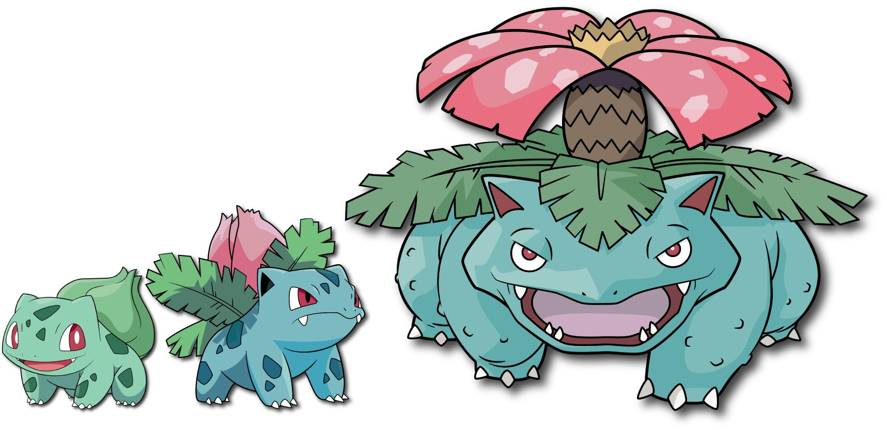

|
The first ever Pokemon in the Pokedex is Bulbasaur; with this, they managed to create perfection. Bulbasaur is one of the three original starters in Pokemon Red and Blue. You start your journey with a cute little frog-like grass starter and eventually get to the giant Venusaur who still keeps the cute frog qualities but is now a formidable Pokemon. They even manage to skip the awkward middle evolution stage with Ivysaur. Ivysaur is an adorable Pokemon with a pretty flower about to bloom. This Pokemon is nostalgic to many not just because of the games, but also of the anime. Bulbasaur is shown as a strong protector of his friends and is seen in a Pokemon recovery center guarding the place so his injured friends will be okay. His personality and cuteness make this little guy the perfect Pokemon in my opinion. I collect pokemon cards and here are some of my personal favorites of bulbasaur and it's evolutions. |
 |